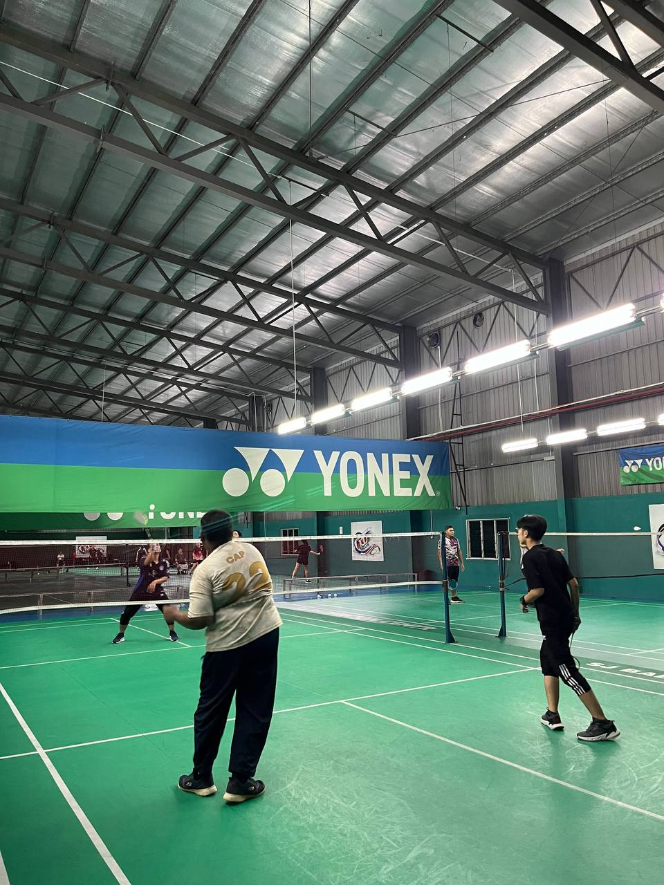

1 / 3

FRIENDLY USIM
2 / 3

HANGING OUT WITH CLASSMATES
3 / 3

GENTING
I chose football as my hobby because it brings me joy and allows me to stay active. The sport offers an exciting combination of teamwork, strategy, and skill development. I enjoy the challenge of improving my abilities.

Hanging out is my hobby because it allows me to relax, recharge, and connect with my friends. I enjoy spending time with people I care about, whether it’s having deep conversations, laughing, or simply enjoying each other's company.

It's a great way to de-stress and take a break from the pressures of school or work. Hanging out also allows me to try new activities, discover new places, and create lasting memories.
Football

Football gives me a great way to stay active and challenged. I love the teamwork, the strategy, and the adrenaline rush that comes from playing the game. Every match is an opportunity to push my limits, improve my skills, and learn new techniques. Football also allows me to bond with friends, whether we’re playing together or cheering for our favorite teams.

gives me a great way to stay active and challenged. I love the teamwork, the strategy, and the adrenaline rush that comes from playing the game. Every match is an opportunity to push my limits, improve my skills, and learn new techniques. Football also allows me to bond with friends, whether we’re playing together or cheering for our favorite teams. The sense of community and excitement it brings is something I truly enjoy.
Hanging Out
The simple act of hanging out with friends brings joy and laughter. It's a chance to let loose, have fun, and make lasting memories with people who share similar interests and positive energy.

Hanging out is often an opportunity to try new activities, explore new places, or discover fun things to do together. It brings a sense of adventure and excitement to my routine.

Spending time with friends allows me to create deeper connections and build meaningful relationships. Whether it's sharing a meal, chatting about life, or just enjoying each other's company, these moments strengthen our bonds.

Hanging out with friends is a great way to unwind after a long day of studying or work. It helps me clear my mind, relax, and take a break from the pressures of daily life.